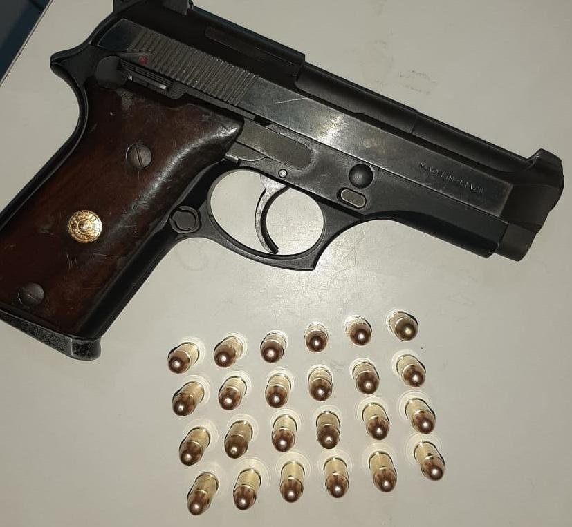

O Crime
Mais um fato chocante abalou a nossa cidade na madrugada de hoje. Por volta das 02:00h da manhã, uma foi apontada como suspeita de tentativa de homícidio contra seu próprio filho. Segundo vizinhos e testemunhas, disparos de tiros puderam ser ouvidos por todos os corredos do prédio Des Mondes da Rua Le château no bairro de Delacour, presente na região leste da cidade de Atlântica.
A acusada pelo crime chama-se Sarah Maxwell Ethans que, conforme testemunhas, foi responsável por disparar dois tiros na vítima, seu próprio filho Charles Maxwell Ethans. Ainda não se sabe o motivo exato do crime, mas testemunhas afirmam que ambos estavam discutindo constantemente dias antes do atentado. Há rumores de que um dos pivôs das discussões seria também por causa da nora de Sarah, Jade Sabino Esther. Ambas tinham dificuldades de relacionamento e apresentavam atritos no convívio social.
A arma do crime apreendida foi encontrada no closet da casa e foi identificada com sendo um revólver calibre 38, com 10 munições de 5mm. Ela pertence ao padrasto policial civil da vítima, Erik Damiano Lamark. A polícia ainda está investigando se o padrasto também esteve envolvido no crime. Segundo o porteiro do prédio, ele havia saído por volta das 21:00h (horas antes do atentado), e não se sabe se voltou para a residência e nem o horário.
Estado da vítima
A vítima segue internada no hospital municipal Saint German localizado no mesmo bairro de residência dos envolvidos. Segundo médicos, os disparos afetaram a região do abdômem, mas felizmente as balas não atingiram orgãos vitais e, a vítima não apresentou sinais de hemorragia interna. A vítima permanecerá internada no hospital em observação para que os médicos possam remover as balas e os estilhetes que atingiram a vítima.
Repercussão
Familiares a amigos lamentaram o ocorrido. Nenhum dos entrevistados conseguiu dar detalhes do(s) motivo(s) que teriam levado a autora do crime a fazer os disparos. Contudo, todos afirmaram que a mãe tinha ciúmes da nora com o filho e que não aprovava esse relacionamento. Segundo Olavo Bascos Medeiros, amigo próximo da vítima, Charlles também apresentava comportamento instável e demonstrava sinais de agressividade. Não se sabe se a suspeita estaria tentando de defender ou se proteger de algo...
Escrito por Giuseppe Tocci, Redator e Revisor do JornalQuando soubemos da trajédia não pudemos acreditar! Uma coisa é você ver na televisão com um desconhecido e, outra bem diferente, é ver uma catástrofe dessas ocorrer com alguém tão próximo e conhecido...
Olavo Bascos Medeiros, amigo próximo da vítima